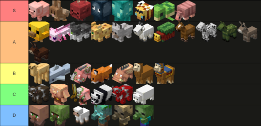

Through my studies as a game design major, my many experiences modding Minecraft, and the
development of
my modpack,
I have formed a very strong and specific view of what Minecraft should be like, and thus I have
many opinions on its updates. Here they are in chronological order, (currently from 1.17 - 26.2).
1.17, or 'Caves and Cliffs Part 1', is the first half of the cave update implementing its non-generation features
such as blocks and items. The way that some these features were made to be obtained in survival were a bit weird,
but I'm not going to cover those here as their proper generation came in the next update. The split of 1.17 into
2 updates caused a lot of drama, with 1.19, 1.20, and so on being considered extensions of it as well. This
eventually snowballed into Mojang changing their update cycles entirely, for worse rather than for better.
- Amethyst is the first new gem in a very long time, and unfortunately it leaves a lot to be desired. I like that
its blocks are musical, and their sprites are quite nice, but that's all the positives I can really say. Amethyst
coming from a geode rather than an ore is an interesting concept, but it falls a bit flat because it makes amethyst
an extremely abundant resource with little to no use for it. The game already had one useless quartz, and now it
has two. I would have prefered geodes just being quartz to be honest. Amethyst looks nicer but they would never
outright remove quartz so I'd rather them use that than add a new one. Though any gem being so easily farmed makes
it hard to balance any potential uses for it. I at least appreciate budding amethyst being another immovable block
like spawners, I think that there should be more things like that for the player to build infrastructure around.
- Calcite is a pretty nice stone, though it not having any stairs, slabs, walls, bricks, or literally any block
variants is upsetting.
- Smooth basalt makes it easy to see geodes from afar, and are a decent looking block, though they also lack variants
despite being part of an existing stone family.
- Tuff is a good stone type, but it follows the trend of not having any variants. (At least for a few updates.)
- Dripstone is yet another stone type without block variants, but at least it has pointed dripstone which is pretty
cool. People had wanted stalagmites for a long time, and adding a new stone type for them was a unique way to do it.
I like that they are 2D a lot, because 3D stalagmites never look any good.
- Azalea being a tree type is... weird. Azaleas are flowers, and would have worked fine as a two-tall bush like roses,
but they were made into a tree? And a tree without a wood type at that? They look nice and have pretty flowers, but
I will never understand why they made it a tree. Their saplings being bushes with 3D models is a bit strange too,
and while I'm used to them now I would personally rather replace them with regular saplings.
- Copper is the most divisive ore in the game, and it all started with its implementation here as a decoration block
resource. They balanced the ore drops around this purpose, and it was all downhill from there. Its oxidisation
mechanics are pretty cool (if not a little inconsistent as more copper stuff was added down the line), but each
copper block having 8 versions of itself really clogs up the creative inventory. The waxing mechanic using honeycomb
is a really good use for the item and makes a lot of sense despite this item clutter.
- Candles are a fun light source that can make a build feel a lot cozier and more magical. Them stacking like sea
pickles was a good choice, and I like that they can be lit and unlit. Being another good use for honeycomb, this
update is surprisingly good for bees.
- Glow berries are great cave foliage, acting as both a food and light source. Their name, paired with sweet berries,
implies that other berry types could be seen in the future, and while bloat-wise that's a lot of berries, it is a
pretty fun naming scheme to give to them. Glow berries being based on sweet berries is an example of a biome vote's
features extending past their original bounds.
- Deepslate is a great stone variant that I like a lot. It's different enough from stone and blackstone to be useful
in builds, its durability makes mining deep underground slightly more difficult, and their sounds are really nice. It's
a shame that this stone gets a full blockset when other stones don't get anything, but that's not really the fault of
deepslate. I enjoy deepslate having its own ore variants, as having regular ores generate in deepslate would have
looked really strange.
- Dripleaves are really unique plants that I like a lot. They can be used to make something similar to a spleef field,
but without the need to break and reset it. The small dripleaves are just as nice for decoration purposes as the big
ones.
- Glow item frames are a nice addition, and I tend to use them over regular ones at this point. It's nice to always
be able to see the item inside it.
- Glow lichen feels like a block that is often overlooked, but I like it. It adds some slight decoration to caves
and can slightly highlight areas you may have otherwise missed.
- Hanging roots and rooted dirt being related to azaleas specifically is weird, but on their own they are nice blocks.
I think it would be cool if they generated all over the place.
- Light blocks being ported over from Bedrock Edition was pretty nice, and make for a useful creative mode tool. I
haven't really used them much because I don't play in creative much, so I don't have much to say about them.
- Lightning rods are a good way to prevent naturally occuring damage to your builds without them having to remove
lightning. It's a bit of a bandaid solution, but it works well enough if you ignore everyone using lightning rods
in their builds. It's at least some sort of use for copper.
- Moss is awesome, I love moss, it's the best feature ever!!! I like the way it spreads and its texture is really good.
It makes for some good landscaping material.
- Powder snow is snow that is snowier than before. It is one of the mountain biome vote features, which I didn't vote
for, but with a cave update being so desired I can see why people thought this would be a good choice. And to be fair
it did come with the cave update so it did sort of work. Powder snow itself is pretty fun, I like that you can become
frozen inside of it but I wish it was easier to pick up and carry to build with.
- Spore blossoms make for some really nice ambience, and I would love to see some more similar (non-firefly) blocks to
it. Their particles can be used in pretty ways that I tend to implement into builds whenever possible.
- Tinted glass is sure a use for amethyst. I can't say I use it much but creating a window without light does has its
use cases.
- Axolotls are a cute mob that I've never actually used for their intended purpose. They regenerate when they play
dead but I still wouldn't want to risk them dying. I like their variants and it is cool that there is a special rare one.
- Glow squids were the winners of what was probably the most divisive mob vote ever. A lot of people were not happy with
them winning, with the whole drama around Dream and the misleading video about them. I was upset at the time but I've
gotten over it. Glow squids are fine, they sort of glow and they spawn underground and that's about it.
- Glow ink sacs are an item that probably didn't need to exist, but I'm glad glow squids at least got some sort of use.
It's cool that they they make sign text glow.
- Raw ores are great and probably one of the best features of this update. It's nice for all ores to drop items, and its
especially nice for fortune to finally work on metals. Their textures are good on both their item and block forms, and
the blocks generating in veins makes for an easy way to tell that you've found one.
- The goat is a decent mob, but one that probabaly could have done more. They didn't drop their horns originally, even in
1.18, which is really weird. It's cool that you can milk them, but they should have kept goats dropping mutton. The
screaming goat is a fun variant for them.
- The spyglass is an item that a lot of people don't need thanks to common client-side mods, but I like the spyglass being
a diegetic solution. I think more things like this should be done with items, like coordinates and biomes. The overlay is
annoying though, you should just be able to zoom normally without any visual restrictions.
- The changes to ore textures are awesome and anyone who doesn't like them is blinded by nostalgia. This isn't a case like
the spawn egg or dye changes where its good to have accessibility but the sprites don't look good either, these ores look
really good. It's a good change.
- The changes to the clock, compass sugar cane, and signs are similarly very good, and it's weird they weren't changed in
1.14 with everything else.
1.18, or 'Caves and Cliffs Part 2', is the second half of the cave update implementing new world generation and a
lot of smaller and technical changes. While those changes aren't something I can cover from a game design perspective,
this update still has a decent amount of things to review.
- Otherside is a really good disc, and follows a (then) new trend of each major update having a new disc. It was a
nice surprise to get a disc in this update, as there are no other new items.
- The new height limit was a long time coming, and while it makes the game borderline unusable on older devices, it
definitely helps the world feel more expansive. The Y coordinate delving into the negatives is an interesting choice,
but I imagine it helped old worlds transition to this update. The deepslate layer underneath stone is really cool and
makes for an instant visual indicator of how low down you are.
- The new cave generation is really nice, and puts the old caves to shame. It is so much more fun to explore cave
systems now, with the huge open spaces being especially impressive. I have strip mined a lot less since this update.
- Dripstone caves are more than just a cave with a different stone type, they have a very different feel to them. The
pointed dripstone feels well spread out, and the water helps connect it to the lush caves and water aquifers. The
large clusters and pillars of dripstone feel like a natural evolution of pointed dripstone.
- Lush caves are a really good take on an obvious concept. I appreciate the use of moss, glow berries, and azaleas
rather than just throwing vines in a cave and calling it a day. The glow berries make the caves easier to traverse
and act as a decent source of food, though the hundreds of tropical fish that spawn just to die also fill that role.
- The new mountain biomes are definitely an improvement, and I personally find their generation to be quite pretty
while also easily traversable. My favourite mountain biome to exist inside of is the meadow, and my favourite to look
at from afar is the snowy slopes.
- Ore veins are really fun, I like them a lot. When you find an iron vein during a caving expedition it can be as
exciting as finding diamonds, especially in the early game. It would have been nice to see veins for other ores than
just iron and copper, but it would be hard to balance them for any other ore.
1.19, or 'The Wild Update', is the update I have spent the most time on in the last few years, due to it being my
main modding version with packs like Raspberry Flavoured and The Alternate Timeline being on it. I think this update
is probably the most underrated update despite somewhat being 1.17 part 3. The cancellation of certain features in this
update certainly led to the negative feelings towards 1.19, and added fuel to the fire that was the 1.17 split as
mentioned previously.
- Frogs were part of the swamp biome vote, and as I voted for the swamps I was really happy to see them get added
to the game so quickly after losing to mountains. As mentioned on the webmaster's page, I really like frogs, so it's
awesome to have them in the game. They're not the most useful mob in the world, but they aren't the most useless either,
and I think they do a better job than pandas, llamas, or parrots in that sense at least. I like their 3 colour types,
and while I still favour the green one, the orange one has grown on me as the main naturally spawning frog. I really like
how their eating mechanics work, their long tongue is just perfect. My biggest complaint with frogs is that you can't
bucket them, it is really annoying to move a frog home after growing it in the required biome for its colour.
- Tadpoles are really cool because they are a unique baby made before mobs had unique babies. I like that they have
different AI and essentially act as fish, and that they are bucketable unlike in their older forms. I'm glad that frogs
got a unique baby mob, because other mobs like bees that should have unique babies don't.
- Frogspawn does what it needs to do, and is basically just turtle eggs but on water. I'm glad it hatches into multiple
tadpoles rather than just one, and I think that other animals should have larger litters too.
- Froglights aren't what you'd expect a frog's utility to be, and while I find them a bit strange they are at least
something to make the frog stand out. It makes sense for a frog to eat a slime variant, and it's cool to make that the
mechanic to base the frog's utility around, but a light block probably isn't the best thing they could've gone with.
They are nice blocks though, and I have used them on occasion.
- Mangrove trees are a bit of a messy tree, but still pretty fun. I like that they have unique sapling mechanics unlike
every other tree. When they were announced I was really dissapointed that their wood wasn't green, and I still am now,
but the red is at least a nice looking wood. Mangrove roots are useful for storing water in a single block.
- Mud is another block with a colour I'm not huge on. I understand that mud can be grey, but it feels weird to not just
make it brown, the most commonly associated colour for mud. With its unique block height it can be used for some
interesting things.
- Packed mud is a nice building block and a good use for mud. I believe they wanted to implement building materials from
other cultures which I think is cool. It would have been nice to have chiseled or polished mud too.
- The mangrove swamp is a biome that really didn't need to exist. The swamp mob vote claimed it would enhance swamps, yet
swamps are still boring as ever while the mangrove swamp exists alongside it. I'm not a fan of this decision. The biome
itself is pretty nice though and I enjoy mud being its main ground covering block.
- Sculk catalysts turning souls into sculk is really interesting both mechanically and lore-wise. I like that the sculk
blocks keep the experience inside them rather than the mob dropping it, further tying experience to soul energy. It's
also just good to have an easy way to farm sculk blocks, as they are a very nice block.
- Sculk shriekers make the deep dark actually pretty scary, as they are pretty difficult to cheese without wool and make
for some creepy ambience with the darkness effect. The warden being summoned by vibrations rather than spawning naturally
is a great mechanic that allows for different stealth strategies. The texture of the shrieker is also really cool, the
souls spinning around inside are awesome.
- Sculk sensors are a crucial part of the warden summoning mechanic, and are also useful outside of the deep dark for
their wireless redstone functionality. They were technically already in the game before this update, but weren't properly
implemented until now.
- Disc fragments are stupid and could easily be replaced with a slightly rarer disc loot table.
- Echo shards are peculiar items that don't do much but have a lot of potential. I hope they get more uses in recipes
down the line because right now they don't do much at all.
- The warden is such a cool mob, probably one of the best to ever be added in my opinion. I like how you aren't meant to
kill it, with the rewards instead coming from the loot it protects. Its spawning mechanics are really unique and its design
even more so. It being blind and only finding you through vibrations is awesome functionality and I love its sonic boom
attack. I wish it wasn't killable at all to be honest, but in a game like Minecraft any mob can be cheesed somehow anyway.
- Reinforced deepslate is a block made to set up future content. It was a big mystery as to what it was meant to be for,
with the lead theory being that it was a portal frame, and this was proven true with Minecraft Dungeons 2. Much like
how piglins were made for Minecraft Legends and illagers were made for Minecraft Dungeons, it seems sculk was made for
Minecraft Dungeons 2. In the base game though, it doesn't do much but sit and look cool.
- The deep dark is a creepy little cave biome, and it was good to finally get it after it was excluded from 1.17/1.18.
It is a fairly simple cave biome but it does its job well, and the fun of it obviously comes from the ancient city.
- The ancient city is the best structure in Minecraft, hands down. This structure is why I believe 1.19 to be underrated,
it is so fleshed out and I have only grown more fond of it over time. It is definitely the reason that sculk was delayed
an update, and probably part of why 1.17 was split into two, but it was worth the wait for such a fun and polished structure.
Mob spawners wish to be but a fraction as cool as the ancient city. I don't even know what to say about it other than it's
just really really cool, I love the lore implications of the blue wool and dark oak blocks being illager related, I like
the hidden redstone room, the portal frame is very interesting, and there's just so many little details all over the place.
- 5 is a really interesting disc. Much like 11, it contains a story rather than a song. The sounds featured in it include
a flint and steel, an army marching, an endersent, amethyst blocks, sculk sensors, and a warden. It's definitely linked
to Minecraft Dungeons and I would love to know what is really going on in it.
- Recovery compasses are a decent way to locate your death point, but they are pretty expensive and require you to be
pretty good at not dying to get. You also only get one chance at finding your death location as if you die again the
compass resets. It's a cool idea but not the best execution.
- Goat horns are a pretty fun item to play with. My favourites are Call and Sing, but it's pretty cool that Seek is the
illager raid horn too. You can't do much with them but make noise, but sometimes it's fun to have a noise maker when
playing with friends. I always forget that goat horns were added in this update and not alongside goats, it's so weird.
- Allays are unfortunately not the glare which I voted for, but despite that they are a good addition to the game and the
lore. They are cute little pets, and ones that are pretty good at not dying on adventures. Their item sorting mechanics
are pretty useful and their ties with music are fun. I love them being connected to vexes, and being a really important
mob in Minecraft Legends. The blue allay's existence in the base game makes me wonder what happened to the yellow ones.
- The vex remodel is so good. The original vex was pretty bad, and tying them to allays is fascinating. It seems like
illagers somehow corrupted allays to be their summonable drones. Truly interesting.
- The new spawn eggs for the ender dragon, iron golem, snow golem, and wither are nice additions that probably should have
existed the whole time.
- Chest boats are once again a biome vote feature, and so it was great to see them added. They are a great parallel to
chest minecarts and are probably more useful.
- The new potion colours make potions feel a lot more distinct, even if I now get different potions confused. Them not
having an enchantment glint is probably for the best.
1.20, or 'Trails and Tales', is the last major update before drops were created, and it's one that a lot of people
seem to not care much about. I think it adds some good stuff, and some less than good stuff, but overall it's
pretty good I think. Some may say it's 1.17 part 4, which is sort of true, but it definitely has its own identity too.
- Bamboo wooden blocks are something I wanted ever since bamboo was added, and I think they were done really well.
I'm very happy that they went with the stripped yellow bamboo approach for the planks, though it's strange they
added a new mosaic block for this wood type only. Bamboo boats being rafts is very fun.
- Calibrated sculk sensors make sculk sensor contraptions much easier, and I like that it uses amethyst in the
recipe for both the lore of amethyst as a sound related crystal, and for a new use for amethyst.
- Cherry trees were a desired feature for an extremely long time, and it was really cool to finally see them
added. The texture of their planks don't have much contrast which isn't great, but I like their hue a lot. I
enjoy that petals fall from the trees.
- The chiseled bookshelf should have just been a rework to the bookshelf. It has never made sense for the bookshelf
to have books on all sides, and taking books out and putting them in is a really cool mechanic, but the regular
bookshelves still exist! I know that the reason for this was that it could make some builds look weird to replace
the old bookshelves with the new ones, but it's so frustrating to see old features stay stagnant as new versions
of them are implemented alongside them. Chiseled bookshelves also really should have had wood variants. The
advancement for obtaining one should have been 'Knowledge is power'.
- Decorated pots are a fun addition that I've wanted ever since pots were added in Minecraft Dungeons. They
work a bit differently to how they were originally showed off in the 1.17 preview, but I think they work better being
simpler and I'm just happy to have gotten them already, after being announced 3 updates prior.
- Pottery sherds, being part of pots, are pretty fun, and allow for a decent amount of customization that you don't
usually see in singular blocks. I like that some of them reference Minecraft Legends through their names, though the
name 'sherd' itself is a pretty weird choice even if that is what you would technically call a pot shard.
- Hanging signs are a cool sign alternative, if not a little strange for using stripped logs instead of wood. I like
that they have different hanging states depending on their placement. It's also great that signs can have text on
both sides now.
- Piglin heads were a strange thing to add in this update, but they are a nice addition regardless. It reacts to
redstone just like the ender dragon head which is a nice touch.
- Pink petals are very cute, and are a unique way to do ground covering flowers. They are probably my favourite
Minecraft flower, or are at least in the top 3.
- Sniffers are the mob that I voted for, so it was nice to see them added to the game. They ended up working pretty
well with the update's theme which is quite nice, just like goats and campfires were. Unfortunately they don't
really do much of value, they can only dig up two plants and can be difficult to get a hold of for such a small
reward. I would have liked if they were rideable or could find more plants with proper uses.
- Pitcher plants and torchflowers are the previously mentioned sniffer plants, and they leave a little to be
desired. It is a bit strange that they are the only flowers that can be grown like crops, and I really wish that
the torchflowers glowed.
- Suspicious sand and gravel, along with the pots, were a surprise to see after so much time passing since 1.17.
They work quite differently to their original showcase, but I think they're better this way. It's much simpler to
just have brushes take the items out than have a tenderness mechanic.
- Brushes are obviously tied to the suspicious blocks, and I quite like how they look in comparison to their
original textures. I do wonder what happened to the blue brush from the original showcase but it's probably for
the best to just have one brush.
- The relic disc is really nice, I love that it ties the trail ruins to Minecraft Legends' time period, as well as
canonising that game in a much clearer way. I also just really like the music in Minecraft Legends so it's nice
to have some of that in the base game.
- Netherite upgrades are terrible. All it really does is make netherite gear impossible to create on big or
controlled servers. I really do not understand why they added this feature.
- Armour trims on the other hand are quite fun, and I have enjoyed using them on many occasions. It's pretty cool
to tie each one to an existing structure, giving players a reason to explore the world to find each one. I also
like that they can be combined with many different ingredients for lots of different combinations, rather than just
one colour per armour type. It's cool that they are another use for diamonds, but I don't really know why they use
diamonds. I don't think most diamond-ingredient recipes have any thought behind them.
- The camel is on the fence between useless and useful for me. On one hand, I don't know why horses couldn't just be
the mount to take multiple players, but on the other hand I like their silly faces. It's weird that they didn't
originally spawn naturally in this update, and I wish they could wear armour, but at least they give cactuses a new
use as their food.
- Cherry groves are a pretty biome that I quite enjoy. They aren't perfect and there's definitely things I would
change about them, but I am always happy to see them. :3
- Trail ruins are a bit of a weird structure. They feel a bit too random in their build shapes and block selections
to me, but that's nothing in comparison to their suspicious block loot tables. I have never seen such awful loot
tables in this game. The only items of value are the sherds, templates, and the music disc, most of which being
useful in any way, especially after finding the disc more than once. The rest of the loot is pointless junk. In what
world am I ever going to want to uncover a purple stained glass pane? I made my own brushing loot table for Modest
Mining back before this update released, and it is leagues better despite being made in a day and having very little
playtesting. And that is an insult to this feature, not a compliment to my work.
1.20.3, or 'Bats and Pots', is the first of many 'game drops', a trend started after 1.20. I think that
game drops are stupid, the whole point of version numbers is that they show which versions are major
updates and which are minor changes. And now there are just a bunch of updates with minor change version
numbers that are actually major-ish updates? Are all of the game drops released post 1.21 just part of
Tricky Trials? They are all extensions of 1.21 so that's how it looks. Despite my problems with game drops,
that doesn't mean the changes in these smaller updates are necessarily bad. A lot of them are quite good,
and while this one in particular is fairly small, it made a couple of changes that I love.
- Bats have always looked weird with their pixel inconsistent designs. I never thought I would see them
get updated, yet here we are. I adore their new design and I wish my existing merchandise involving bats
could update with them.
- Decorated pots being made to be able to store items felt like a no brainer to me. It's both fun and useful,
adding utility to an otherwise decoration-only block. I think that more blocks deserve updates like this.
I'm not huge on the animations for inserting items though, to me it feels somewhat strange for the block to
move in such a smooth way.
1.20.5, or 'Armored Paws', is another game drop, implementing the mob from Minecraft's final mob vote, which
I voted for. Because of this, it should be obvious that I was happy to see this update, though it certainly
came with some issues.
- Armadillos are the mob I voted to join the game, as I have wanted wolf armour for a very, very long time. I
think that the mob is quite fun, if not a bit of a strange addition to the game when compared to the existing
animals. Them crawling up into a ball is quite cute, and being able to brush off their scutes is a cool addition
that I would love to see added to turtles as well. I'm not huge on how scute brushing works though, rather than
there being a cooldown on each armadillo, you can just spam click them until your brush breaks. That combined
with armadillos randomly dropping scutes on ocassion makes me not very fond of their scute mechanics overall.
- Wolf armour, as I previously mentioned, is something I have always wanted to be in the game, and so I love
this addition. Having it tied to armadillos is not exactly the way I would implement it myself, as it could have
just worked the same way as horse armour. Mob uses like this are very strange and I feel as though there are
better ways to make mobs useful than tying them arbitrarily to items such as this. I still enjoy having wolf
armour though, and I can see myself actually taking wolves out into the world with me thanks to their addition.
- Wolf variants are really cool, and are an example of an unexpected feature stemming from a vote. Some other
examples of this phenomenon include glow berries, fireflies, and practically all of 1.18. Dog types had been a
long requested feature, so to see them finally come to the game while also making wolves spawn in more locations
was really cool.
1.21, or 'Tricky Trials', is the first (and last) major update since game drops were introduced, adding a
variety of features mostly relating to the new trial chambers. A lot of people seem to not care about this
update that much, but I think it was actually quite a decent update, adding some really cool features that
I wouldn't want to live without now.
- Trial chambers are really cool structures that I have had a lot of fun with. They can be quite difficult
to fight through, but also feel worth the effort unlike a lot of the structures in the game. My main problems
are that it can be difficult to find these structures at times, making this update feel very self contained,
and that the chambers are full of copper blocks. Copper is not a useful resource, but now that you can get
stacks upon stacks of the stuff from a single structure there is no hope of it ever becoming a useful resource.
- Trial vaults and spawners replace regular chests and spawners in trial chambers, and they function in a very
cool way. Allowing multiple players to fight through the chambers by limiting rewards to keys and vaults is a
good way of keeping chambers replayable, and I hope to see these blocks used in more structures in the future.
I also appreciate that the spawners create more difficult waves when there are more players around, the blocks
work together really well to make the chambers function to their fullest in both singleplayer and multiplayer.
- Breezes are an awesome mob, I love the idea of element type blaze alternatives so much. I hope that we see
more mobs of this nature in the future. For a blaze alternative the breeze is also very unique, it almost acts
more like a boss mob than the blaze does with its wind attacks and evading strategies. Wind charges are a very
cool alternative to fire charges, and make me wish that fire charges could be thrown like fireballs in a similar
way to the wind charges. It's a bit weird that wind charges come directly from breeze rods, when fire charges
come from blaze powder not blaze rods, but if they had no other ideas for breeze powder uses then I suppose
it's better to have less item bloat.
- The mace is a pretty fun weapon, that I've enjoyed messing around with in my testing. Unfortunately it feels
way to rare to me to actually be worth anything. It's a similar case to the trident, but turned up to 11, and I
can't justify their cost for their gimmick. I also think that adding the heavy core just as an ingredient to craft
the mace is stupid. You could just have maces come from vaults like tridents do.
- Ominous bottles solve a problem I've had with illager raids, that being the instant bad omen you get from
eliminating a patrol. The choice to activate bad omen yourself is quite the welcome one, though I don't know if
I would have chosen a consumable liquid myself. Tying bad omen in with trial chambers is a pretty fun idea, I
always prefer adding new uses to existing mechanics rather than making new mechanics that feel very similar.
- Crafters are something I never thought we would see in the game, and are also something I've always modded
into it myself. While the mechanics of the block seem a little bit janky to me, I think this is a great addition
that opens up a world of possibilities in automation. This one of the best features of this update.
- Bogged are a swampy skeleton variant, which has been explored before in other forms through things like
Minecraft Dungeons. I think the bogged is the best version of this idea, and has much more of a personality than
strays. I appreciate that they were even added at all, since originally they were just regular skeletons with
poison arrows in chambers. They went above and beyond to make this version of the mob interesting, even making
them shearable. Of all the undead variants this is one of my favourites.
- The new copper block types are great, and honestly they should have just been added along with copper originally.
As I previously mentioned I do not like them generating in such a large quantity in chambers, but that's more of
a structure issue than a problem with these blocks. They look nice and I enjoy using them, and I am so happy that
they changed the terrible trapdoor and door recipes that they came with originally. A lot of people were
dissapointed by the changes to the copper bulb, but I don't really care personally.
- I find the new potions to be kind of strange. Not bad necessarily, but just a bit weird in comparison to the
existing potions. The infestation potion is the least strange to me, and I think it's pretty cool despite the recipe
just requiring stone. The other three potions causing something to happen when you die is what I find the most
strange, and while I understand their purpose in context of trial chambers, they feel a bit odd to exist as
potions outside of that. I prefer oozing to weaving and wind charging for similar reasons to infestation, weaving
is fine, and wind charging is definitely my least favourite.
- The new discs in this update are pretty great for the most part, I quite like a lot of the new music in this
update in general. I can't decide if I like Precipice of Creator more, but I do know that Creator (Music Box) is
one of the worst discs in the game. I can appreciate it as a version of Creator that just sticks to the music box
aesthetic, but I wish it had just stayed a remix online or something. It's just disappointing to get the music
box version, and for some reason that's usually the one I get.
1.21.2, or 'Bundles of Bravery', is another game drop, adding just one feature if you don't count bedrock
edition finally getting hardcore mode. (Which I don't.)
- Bundles should have been added to the game a long time ago. Being a relic of 1.17, they had a long time to
cook, and it is baffling to me that it took so long to add them. The reason I believe it took so long for bundles
to be properly added, is the problem Minecraft faces due to its many platform versions. While the bundles worked
perfectly well on java edition in snapshots from back when they were originally created, they had to figure out
how to get them to work on consoles and mobile devices. This is also why I believe bundles changed so much when
they were finally implemented. And these changes are just really not great. The way they worked before was simple
and easy, allowing you to see all the items inside and insert / deposit items into it simply. All they had to do
was add an option to scroll through which item you are currently selecting in the bundle to drop, and it would
have been perfect. But alas, they changed it to a new system that works better on mobile phones because that is
their priority. It's a real shame, but at least we have bundles now.
Ignoring their history, the addition of bundles is really good. A lot of people dismiss them as though them only
having one slot doesn't 'solve' the inventory issue. But this one slot is so very useful! It is so easy to make
space in your inventory when you can combine items of different types into one slot. Bundles are a must have for
me in any playthrough.
1.21.4, or 'The Garden Awakens', is yet another game drop, and it is a fairly underrated one in my opinion. There
isn't much in this update that I actively dislike, it is all fairly decent stuff.
- Creaking hearts are the sculk shriekers of pale gardens, spawning the creaking based on certain factors. I enjoy
that while there are many similarities between these blocks, they do have fairly different mechanics. Whereas
sculk shriekers spawn wardens to protect the deep dark, the creaking heart acts more like the true body of the
creaking, using the mob creaking as a vessel to attack the player at night. I also appreciate that it allows resin
to be a renewable resource.
- Eyeblossoms are a very cool looking flower, and I appreciate their mechanic of opening and closing depending on
the day, it is a mechanic that ties in well with the creaking heart. I do not however like that there are two items
for the flower depending on its state, this could have very well just been a blockstate and I don't understand why
open eyeblossoms make a different dye to closed eyeblossoms.
- I love moss, so pale moss is a very welcomed addition for me. Pale moss carpets are also nice, and I like that it
grows up walls, it would be cool to see regular moss carpets do this too. I find it weird that certain blocks have
mossy variants when it could just be an overlay block or a system similar to waterlogging. Pale hanging moss is the
star of the show when it comes to pale moss, and I really like how it blends the ground and the treetops together in
the pale gardens.
- Pale gardens are a pretty cool concept, a cool antithesis to the dark oak forests. I think that the biome is quite
good, though due to it being based on the dark oak forest it suffers its same issues, notably that the tree shapes
suck. The pale garden would be much better if the tree shapes were taller and less flat in the foliage region. Like
many others, I think that the biome could use a dense fog to make it feel creepier.
- Pale oak is a really good wood type, it's kind of wild that the game went so long without a white wood. It's very
verstaile for building, the log looks nice, and the doors/trapdoors have a cool texture. The stripped log texture
is very smooth and looks very nice in a wall. The sapling is also quite nice, especailly in comparison to the dark
oak sapling.
- Resin is a material I've wanted in the game for quite a while, and are a feature that many mods have attempted to
make. Tying it to the creaking heart is very different to the sap-collecting of mods, and isn't something I would
have expected from vanilla. The resin brick item feels somewhat unnecessary when there is already a resin clump item,
but it is cool that it can be used as an armour trim colour. The blockset is quite nice, although I personally don't
build with orange very often.
- I quite like the creaking, Mojang have wanted to create an asymmetrical mob for quite some time so I'm happy for
them that they finally have. I've wanted a weeping angel-type mob in the game for a long time, so I really enjoy the
creaking's mechanics. I like that it is tied to the creaking heart, and the particles leading you to the heart is
a cool way to balance out you being unable to attack the creaking itself. It's interesting how multiple of the recent
hostile mobs now are not meant to be killed.
1.21.5, or 'Spring to Life', is a game drop that is pretty good for the most part, adding a lot
of small features that the community has wanted for a long time. Despite this I think that there are also some
parts to this game drop that aren't all that great.
- Bushes are a fun addition that add some foliage variation to several biomes. I think the texture leaves a
little to be desired, but I'm glad they were added overall.
- Cactus flowers are something I added to MC AT near the beginning of development, so it was cool to see them
added to the game officially. I think there's a missed potential with cactus fruit, especially with the concept
from the proposed badlands update. Besides that, it is a fun addition that I enjoy.
- Fireflies were finally added to the game after people screaming about them for years. And yet I haven't seen
all that much about people using them... it's almost like people only wanted them because they couldn't have them.
Strange. I am a firm believer that all Minecraft bugs should be large, like spiders, bees, and silverfish, so I
despise fireflies being particle sized. But if you renamed them to glowing spore bush or something with a resource
pack, the firefly bush is a fairly cool block and I enjoy its mechanics. It just would have been nice to have full
sized fireflies like in the mod Naturalist, which I have used in MC AT.
- Leaf litter is a really cool decoration block that both adds a new use to leaves and covers the realm of 'leaf
carpets' often add by mods. Leaf litter being brown is a great thing and anyone who thinks they should be green
needs to go outside and see what fallen leaves actually look like.
- Short and tall dry grass are also great decoration blocks that add some life to the mostly boring desert. Unlike
the bush I think their textures are pretty solid.
- Wildflowers are the pink petals of birch forests, and I appreciate more biomes having ground covering flowers.
- Test and test instance blocks seem pretty useful for development, which is greatly appreciated as a mod developer.
I'm not sure how often I'll get to use them, since I mostly focus on MC AT which is on 1.19.2, but I'm sure they will
be great for other developers.
- Blue and brown eggs feel somewhat redundant to me, as you could just have eggs spawn the chicken assoicated with
the biome they are thrown in so it feels like item bloat. I also don't like that they aren't data driven, so if you
want to make a custom chicken type you can't make a custom egg type to go with it. That's pretty lame.
- I really like the new animal variants for pigs, cows, and chickens, I never thought I would see the day where they
got added. I've wanted animal variants since Minecraft Earth was released, and while it's strange they didn't bring
back any of those designs, I am pleased with the ones that we got. It would have been nice if sheep got variants too,
but at least the change of having blue and yellow sheep spawning naturally was reverted.
- Wolf personalities are a random but fun addition that I was surprised to see, I would love other mobs to receive
this same treatment so that there are more small differences between different animals. It would be interesting
to see the personalities affect other factors about mobs than just sounds, perhaps that will happen in the future.
- I do not like the new spawn eggs. I think it's great to remove the speckled designs as there is quite a steep
learning curve for knowing which one is which, and they aren't very colourblind-friendly, but i just do not like
the way they went about the new designs. Each egg being a different size upsets me on a primal level, and I do not
understand why mobs that are affected by impaling have a ring of water around them. That is a very strange factor
to point out in spawn eggs and I don't like how they look. I also don't like how the eggs don't have eyes, but do
have other facial features (except for creepers and creepers only???). These new eggs are basically round funko
pops and I'm not a fan. I much prefer the resource pack
Mob Crates
, it is far more creative and actually looks good. I will be using this in all of my instances, but I will be forced
to use the egg versions when I'm using mods for 1.21.5+ because their mobs will not magically adhere to this resource
pack.
- The lodestone being crafted with iron instead of netherite is a great change, as tying lodestones to late game
never made too much sense in the progression. It's a shame that it's yet another use for iron when copper is so
limited, but copper's balancing is too all over the place for it to be used in any recipes with the trial chambers
being full of it.
- Camels spawning in deserts should have been the way they spawned from the start. Camels are not just tamed animals,
they are also found in the wild. I'm glad that has changed.
1.21.6, or 'Chase the Skies', is another game drop, adding a few cool ghast related features. It's a bit smaller
than the previous game drop, but they have all been fairly inconsistent in scale.
- Happy ghasts are really cool mobs that I never expected to be added to the game. I've wanted baby ghasts to be
in the game since they were added to Minecraft Dungeons, and making them grow up to be happy by letting them live
in the overworld is some really cool lore that ties into that one advancement about freeing a ghast from the nether.
Being able to ride happy ghasts is extremely cool, and being able to take others with you on them is really fun.
Their harnesses look a little goofy, but in a way that I appreciate. I also love that their addition came with a
ghast retexture, finally making them more pixel consistent.
- The new lead mechanics are really cool, and I enjoy how they interact with happy ghasts especially. It seems to
have been inspired by the Minecraft Movie, and that is something I'm all here for. Chaining mobs together allows
for many different use cases, even if it invalidates llama caravans somewhat (but that mechanic has always sucked
anyway).
- Saddles being craftable is something I thought would just never happen, saddles being such an old feature that
have remained as dungeon loot for so long. Them becoming craftable is great, and gives me hope that some day
horse armour and name tags will get this same treatment.
- The player locator bar seems kind of cool, though I can't imagine using it myself very often. I don't have too
many thoughts on it other than it's weird to outright replace the experience bar while using it.
- I'm personally not huge on the Tears music disc. It isn't awful, but it isn't amazing either. It may grow on me
over time but for now it isn't something I'd go out of my way to listen to. I do find it strange however that you
get the disc from killing a ghast with its own fireball, one of the most common ways to kill a ghast.
- 1.21.7 being a patch for 1.21.6 really shows how stupid game drops are. From seeing the version numbers alone,
you would have no idea that one of them is a game drop and the other is a patch. It's completely ridiculous and
stupid. The painting and disc that this patch adds are also ridiculous and stupid. I personally do not like paintings
that don't look like Kristoffer Zetterstrand's, I think that the shrunk images of his works feel far more Minecrafty
than normal pixel art paintings. I share a similar sentiment for Minecraft's music. Minecraft songs should not ever
be chiptune, or use noteblocks, mob sounds, or other game sounds (besides the creepy lore discs like 11). The lava
chicken disc defies these rules, being a song that does not fit in the game at all. It's like they took a random
remix off of YouTube and put it into the game. I do not like the precedent that this disc sets. I don't even mind
a Minecraft Movie reference being added to the game, but like this?? Really?? The villager sounds sound like AI.
1.21.7 may be my least favourite update ever, and so with how game drops work, 1.21.6 is very negatively affected
in my eyes thanks to it.
1.21.9, or 'The Copper Age', is a game drop adding a bunch of copper related features. This drop is a great example
of the lack of possible polish a drop is able to recieve, and is one of the first drops where I don't really like
any of it that much.
- Copper bars and chains are very disappointing, being recolours of their iron counterparts without any new
texture-work. I don't know if this can be attributed to the speed of drop update cycles or just pure laziness and I
don't know what's worse.
- Copper chests are fine if not a bit unnecessary. They exist to assist copper golems in their sorting, which I feel
didn't have to be the case, but it's not a big issue.
- Copper golems are very different to how they were pitched in their mob vote description, and while item sorting is
more useful than random button pushing, I can't say I like their implementation. Their animations feel off to me, their
sounds would fit a glare more than a golem, and I don't like their eyes glowing. They have disabled forms for every level
of oxidization instead of just coming alive after being stripped as an oxidized golem, which is really strange since
it's meant to be the oxidization making them immobile yet removing it doesn't revive them? And for some reason when you
build them they spawn a copper chest, which I think is to teach the player that copper golems use copper chests, but if
the player can learn how to make the golem they can learn how to use them. I much prefer Team Abnormals' copper golems.
- Copper torches and lanterns are lit with a green flame which is really cool. They did not add green fire in any other
way than these two blocks. Why on earth would you add green fire without adding green fire. I am appalled. The lanterns
are also just recolours again to add insult to injury.
- Shelves are a cool idea and I like that they act as a hotbar switcher, but I don't like their recipes or their textures.
- Copper tools and armour are one of the worst features to be added in recent times. Copper was originally added as a
decoration block, and thus its ore loot tables were set to drop multiple raw copper items to compensate. This was a poor
decision as it meant copper wouldn't be able to be balanced for any other purpose in the same way as the other metals.
They then doubled down on this by making copper generate everywhere throughout the trial chambers. And only after all that
did they finally cave to the complaints of the community and add copper gear. There was no rebalancing, and especially no
changes to the tool progression. They added a completely useless tool set for an unbalanced resource, and they don't even
have good textures. I could write a whole book about why copper tools are a terrible addition but this section is long
enough as it is.
- Copper nuggets should have been added when copper was added in my opinion, so I'm glad they are finally here. It's a
shame that it was the addition of copper gear that finally caused them to be added though.
- End flashes are a very peculiar addition, but one I quite like. I am very interested in what causes them lore-wise.
- The copper trapdoor recipe change matches iron trapdoors so that's good. I don't know why they didn't match to begin
with.
- The new dye textures are not great. Similarly to the new spawn eggs, I think it's good that every dye has a unique
shape now for differentiation purposes, but these textures are just not it. The paper the dyes sit on is a decent idea,
but the dyes themselves have so many chunks of solid and untextured colour.
1.21.11, or 'Mounts of Mayhem', is a game drop that I feel pretty mixed about, there's a few cool things in it but there's more
that I don't like.
- The camel husk is a fun idea, I really like that they chose camels to be the husk's mount. Them not burning in sunlight
has some interesting implications on husks as a zombie type, because I was under the impression that husks didn't burn
due to their head coverings, not just due to being a husk. Them healing with rabbit's feet is a strange but decent use
for the item, though I'm surprised they would want to further encourage the player to kill rabbits.
- The nautilus is a mob that really should've been added in 1.13, both because it would have made sense since that's when
nautilus shells were added, and because the drop system did not do this mob any favours. I really do not understand why
they would choose to make the nautilus, of all animals, to be an ocean mount. Even pigs make more sense as a mount than
them, it would be like riding a snail. And don't get me wrong, I'm glad they made it a large mob, they are similar to a
bug in a way, so I would want them to be big, but I cannot comprehend why these animals would be chosen to be mounts. And
what mounts they are. They are tamed with pufferfish, ignoring the rule they set when fireflies were originally removed
that animals shouldn't eat things that would poison them. They are basically a combination of the happy ghast and the
camel function-wise, being an obvious reuse of code to save time. They give you their own effect, which is literally just
water breathing again, completely devaluing both water breathing potions and conduits. They only have a 5% chance to
drop their shell because they can't insentivise the player to kill innocent animals unless they are a rabbit. Guardians
don't attack them despite attacking squids and axolotls, and the nautilus is arguably way more worth attacking than those.
I also just don't really like how the squid parts of them look. The baby is cute though, and to be honest I wish that was
just how the mob looked. Much like the copper golem, I far prefer Team Abnormals' take on the nautilus.
- The parched is a much needed skeleton variant to round out the undead mob family, and having them ride the camel husk
with the husk is pretty fun. I like that they look like mummies.
- The zombie nautilus is a pretty natural addition, considering this drop adds mounts for the undead and the nautilus is
a mount, but all of my negative nautilus opinions apply to the zombie nautilus as well.
- Nautilus armour is stupid. The nautilus comes with armour built in, its shell. This is the one mount that absolutely
did not need armour, and yet out of all the mounts this is the one that got armour. Camels, llamas, donkeys, and happy
ghasts don't get armour, but the mob with a shell does. Wolves only got armour made of armadillos and yet the nautilus
got armour for every tier. It is truly baffling. There is hardly anything to protect the nautilus from in the first place,
the only ranged attackers underwater are trident drowneds and guardians, and guardians deal magic damage! And now loot
chests are clogged with nautilus armour because mount armour is still uncraftable for some reason.
- Netherite horse armour is once again something that should have been added a long time ago, and it's good that you
can craft them with diamond horse armour. I'm glad that nautilus armour at least got a netherite version too to be
consistent.
- Spears are a new tool type for every tier, which is something I didn't expect to ever see. Strangely though they are
more like lances than spears. They seem sort of fun if not a bit gimmicky, but I would personally make them work more
like tridents than maces. They also make maces kind of redundant which is a choice. Their textures aren't great but I'm
happy they have their own enchantment.
- Zombie horses have been in the game for a very long time, and it's crazy that they are only being implemented now. I
like their implementation, but it's hard to be excited when they have existed since 1.6.
26.1, or 'Tiny Takeover', is the first drop to use the new update version format. It makes sense to stop using the
normal version format with how drops made that format extremely confusing, but its already been 8 drops with the old
format so this has just made things even more confusing. This change also shows that they do not plan on going back
to regular sized updates any time soon, which is really disappointing for the reasons I have made abundant throughout
these update reviews. This drop is the first release version to be fully unobfuscated however, which is really cool. As
this drop almost exclusively adds unique models for baby mobs, I have added a tier list rather than a description for
each one.
- Golden dandelions are a decent way to age-lock animals. I've always been fond of the idea of using poisonous potatoes
to stunt an animal's growth, and a dandelion is a strange choice, but I don't really care enough to complain about it.
- Nametags being craftable really should have been a thing from the start, so it's good that it's possible now. The
recipe isn't great but I'll take what I can get.
- The rabbit remodel is really good and I'm super happy that rabbits finally don't look terrible. I think they could use
a more defined snout, but other than that I have no complaints.
- The new baby mobs range from adorable to awful, but the majority are at least decent. I like the ones with stubby legs,
the chicks are pretty funny (though the cold variant shouldn't be blue), but I absolutely despise the baby zombies.

26.2, or 'Chaos Cubed', is a game drop that I do not care for. I'm just dissapointed at this point.
- Cinnabar is a stone that looks like a block of rotten flesh for some reason. I would say its addition would at least
dissuade people from calling redstone cinnabar, but there's no stopping gamers.
- Sulfur is a stone that should absolutely be connected to gunpowder and is just not. I find that truly horrendous.
- Potent sulfur making water give you nausea is pretty fun, but no other sulfur related feature causing weird effects
is weird.
- Sulfur caves follow the trend of drop features being reused existing features, being dripstone caves but with cinnabar
and sulfur instead of dripstone. Except for the rotten fleshness of cinnabar, the caves look decent, it's just a shame
that they aren't very original.
- The sulfur cube is the first slime variant in the base game since the magma cube, and it is really just not good at all.
What do you get when you combine a slime cube, and sulfur? You would think the answer is an acidic slime, as slime cubes
dissolving the substances inside of them is a common trope, and sulfuric acid is a common use for sulfur, but no. Instead,
you lure them with blocks, which you can put inside of them, to make them completely immobile and act as beach balls. I'm
not fond of turning a slime into a ball, as that seems weirdly cruel and against Mojang's design philosophy, I'm less fond
of the slime that does this being a slime that should definitely have been an acidic slime, and I'm even less fond of how
they look in ball mode. Their outer texture has so many layers of transparency leading from the edge of the slime to the
invisible window into the block inside. It looks really truly terrible, like something you would see from a mod in 2015. I
don't understand why they didn't just make the sulfur cube look like a normal slime with consistent transparency, it would
have looked infinitely better. Different blocks give different stats to the sulfur cube as a ball, which is somewhat
interesting but it doesn't make me like them any more. It's also really strange for a slime to be passive, and that this
is the only slime that grows from its smaller form. This might be my least favourite mob of all time.